Finding the shortest distance from a point to a curve, and fitting a line and a parabola to data — each solved analytically and numerically, then verified against each other.
For a point (x₀, y₀) and a curve y = f(x), the squared distance from the point to any location on the curve is D(x) = (x − x₀)² + (f(x) − y₀)². Minimizing D(x) is equivalent to minimizing the true distance d(x), and avoids an unnecessary square root.
The assignment's four-step derivation, applied generically before specializing to a parabola:
Differentiate D(x):
Set D'(x) = 0. Dividing by 2 gives the orthogonality condition — the vector from the point to the curve is perpendicular to the curve's tangent:
Solve for x. For y = f(x) = x² + 5, f'(x) = 2x, and y₀ = 0, this reduces to a depressed cubic:
Its derivative, 6x² + 11, is always positive, so D'(x) is strictly increasing — there is exactly one real root for any x₀, with no local-minimum ambiguity. Rather than Cardano's formula, a cleaner closed form for the one-real-root case uses a hyperbolic substitution:
Plug x* back into the original distance formula d = √[(x*−x₀)² + (f(x*)−y₀)²].
| x₀ | x* | f(x*) | distance d |
|---|---|---|---|
| 0 | 0.0000 | 5.0000 | 5.0000 |
| −4 | −0.3555 | 5.1264 | 6.2898 |
| −8 | −0.6721 | 5.4517 | 9.1334 |
| 2 | 0.1807 | 5.0327 | 5.3514 |
| 6 | 0.5199 | 5.2703 | 7.6031 |
Two algorithms compute the same distances without solving the cubic symbolically:
def find_distance_newton(x0, y0, f, df, ddf, initial_guess=0.0,
tolerance=1e-7, max_iter=100):
x = initial_guess
history = [x]
for _ in range(max_iter):
D_prime = 2 * (x - x0) + 2 * (f(x) - y0) * df(x)
D_double_prime = 2 + 2 * (df(x) ** 2) + 2 * (f(x) - y0) * ddf(x)
next_x = x - D_prime / D_double_prime
history.append(next_x)
if abs(next_x - x) < tolerance:
x = next_x
break
x = next_x
return dist(x, x0, y0, f), x, history
def golden_section_search(x0, y0, f, a, b, tolerance=1e-7):
phi = (1 + math.sqrt(5)) / 2
resphi = 2 - phi
x1 = a + resphi * (b - a)
x2 = b - resphi * (b - a)
f_x1, f_x2 = distSQ(x1, x0, y0, f), distSQ(x2, x0, y0, f)
history = [(a, b)]
while abs(b - a) > tolerance:
if f_x1 < f_x2:
b, x2, f_x2 = x2, x1, f_x1
x1 = a + resphi * (b - a)
f_x1 = distSQ(x1, x0, y0, f)
else:
a, x1, f_x1 = x1, x2, f_x2
x2 = b - resphi * (b - a)
f_x2 = distSQ(x2, x0, y0, f)
history.append((a, b))
best_x = (a + b) / 2
return dist(best_x, x0, y0, f), best_x, history
The five plots below each show three panels for one query point: the Newton-Raphson path on the curve, the Golden Section brackets shrinking toward the minimum, and the objective D(x) itself with both methods' progress marked. The equation and the point are labelled in each panel's legend.
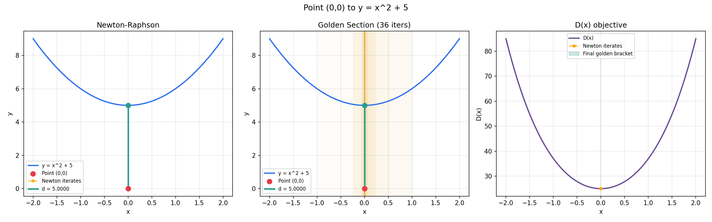
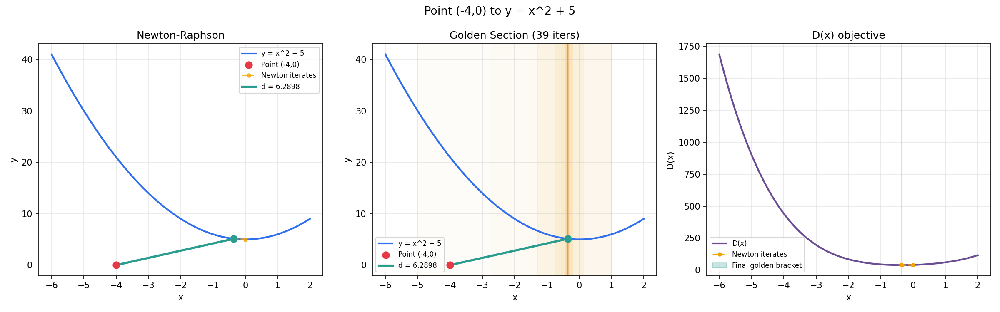
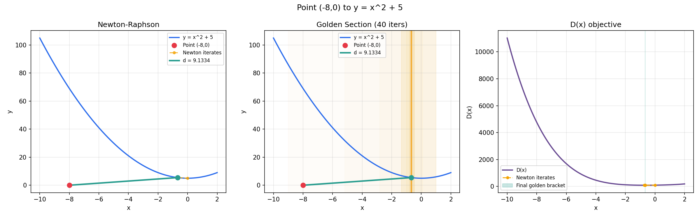
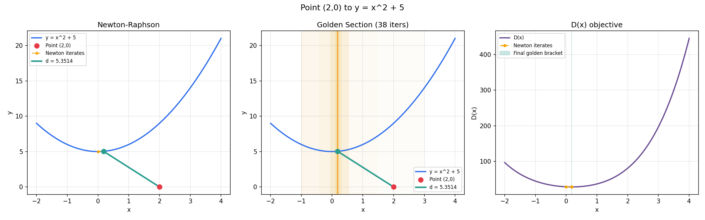
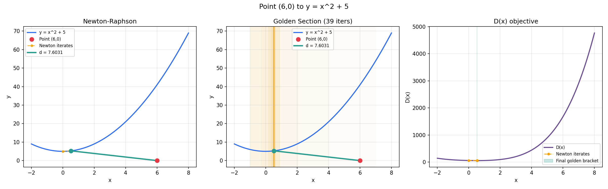
To confirm the routine isn't hardcoded to the assigned parabola, it's applied to y = 2x² − 3x + 1 with the point (5, −2):
| method | x* | distance |
|---|---|---|
| Newton-Raphson | 1.1768 | 4.4307 |
| Golden Section | 1.1768 | 4.4307 |
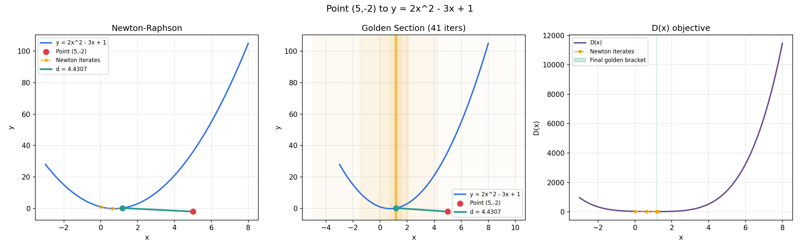
A small change makes the routine work for any function: instead of supplying f' and f'' analytically, they're estimated with central differences. Golden Section needs no change at all, since it never uses derivatives.
class NumFunc:
"""Wraps f(x) and produces f'(x), f''(x) via central differences."""
def __init__(self, f, h=1e-5):
self.f, self.h = f, h
def d1(self, x):
h = self.h
return (self.f(x + h) - self.f(x - h)) / (2 * h)
def d2(self, x):
h = self.h
return (self.f(x + h) - 2*self.f(x) + self.f(x - h)) / (h ** 2)
# usage: pass nf.d1 / nf.d2 in place of an analytical df / ddf
nf = NumFunc(f)
d, x_star, _ = find_distance_newton(x0, y0, f, nf.d1, nf.d2, initial_guess=guess)
| function | point | x* (Newton) | x* (Golden) | distance |
|---|---|---|---|---|
| y = eˣ | (3, 1) | 0.7352 | 0.7352 | 2.5117 |
| y = ln(x) | (5, −3) | 3.8766 | 3.8766 | 4.4975 |
| y = √x | (2, 6) | 3.1818 | 3.1818 | 4.3787 |
| y = 1/x | (4, −4) | 4.2361 | 4.2361 | 4.2426 |
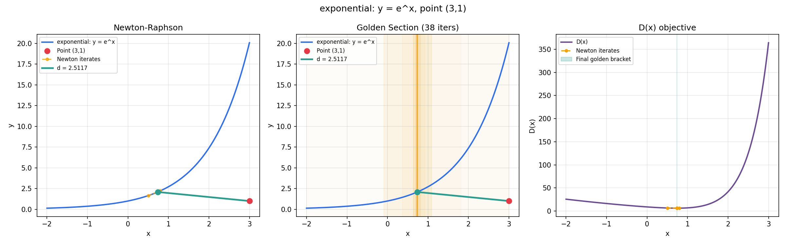
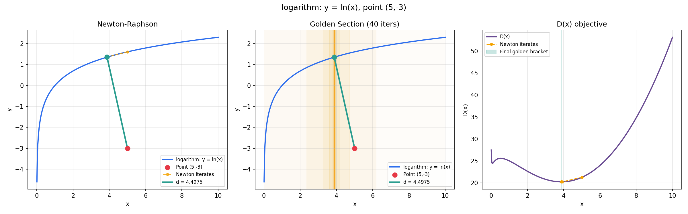
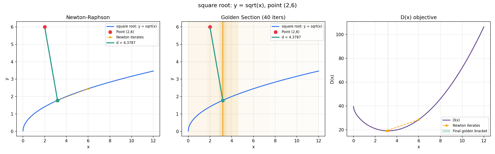
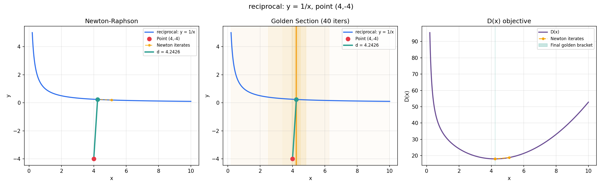
source Full Part 1 + Part 2 script: assignment1_solution.py
Fitting y = mx + b and y = ax² + bx + c to (0, 0.5), (2, 3.5), (1, 1.5), (3, 7.5) by minimizing MSE(params) = (1/n)Σ(yᵢ − ŷᵢ)². Two optimization strategies are compared: coordinate-wise cyclic optimization (fix all but one parameter, solve it exactly, move to the next) and full multivariate Newton-Raphson (update every parameter at once using the gradient and Hessian).
Setting ∂MSE/∂m = 0 and ∂MSE/∂b = 0 gives two closed forms, each depending on the other parameter:
Alternating them from b₀ = 0 converges geometrically toward the solution:
| iteration | m | b |
|---|---|---|
| 1 | 2.214286 | −0.071429 |
| 2 | 2.244898 | −0.117347 |
| 3 | 2.264577 | −0.146866 |
| … | … | … |
| converged | 2.3000 | −0.2000 |
Solving both equations simultaneously gives the exact result directly: m = 23/10 = 2.3, b = −1/5 = −0.2, with MSE = 23/40 = 0.575.
Since MSE(m,b) is quadratic, its Hessian is constant — full Newton converges in exactly one step from any starting point:
Starting from (m,b) = (0,0), the gradient is [−31/2, −13/2], and the single Newton step lands exactly on (2.3, −0.2) — the same answer as the closed form, because the linear system Newton solves is the normal equations, just reached by a different route.
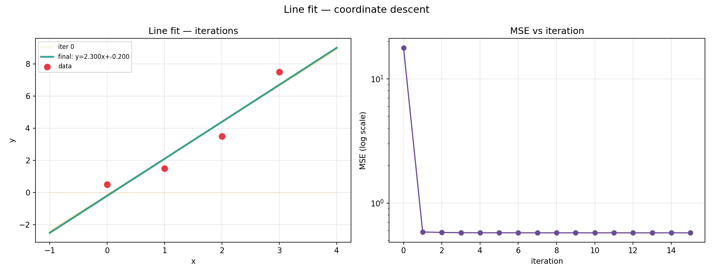
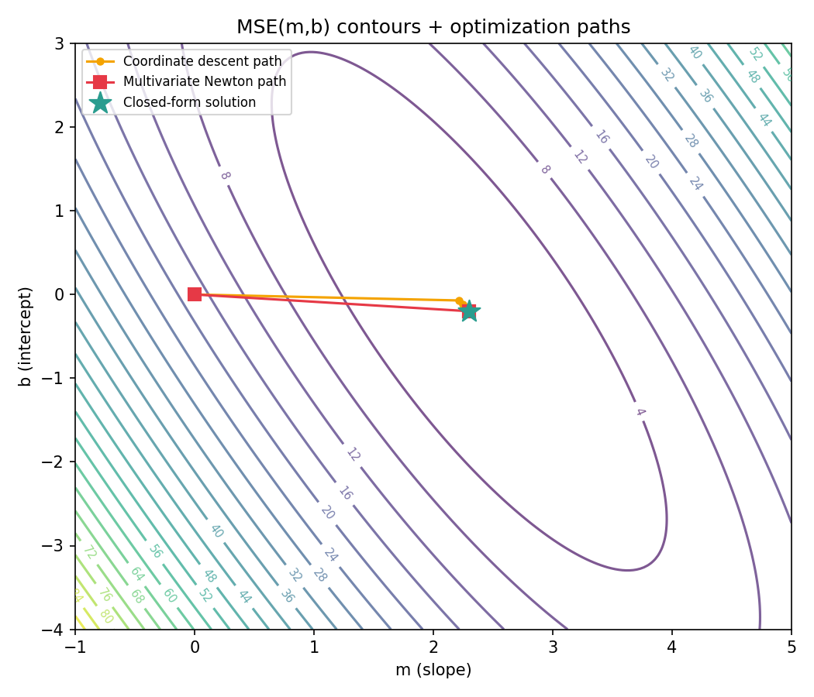
The three normal equations from ∂MSE/∂a = ∂MSE/∂b = ∂MSE/∂c = 0:
Eliminating c (scaling the third equation to match c's coefficient in the others) reduces this to a 2×2 system in a and b, which back-substitutes to the exact solution:
Coordinate-wise cycling through a → b → c converges toward this solution over ~15–20 iterations; full multivariate Newton reaches it in one step, for the same reason as the line fit — the objective's Hessian is constant, so Newton's linear solve reproduces the normal equations.
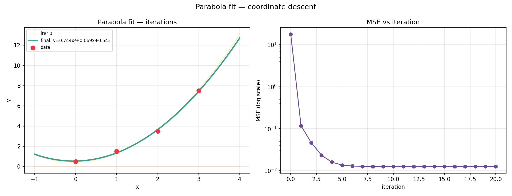
def fit_line_coordinate_descent(xs, ys, m0=0.0, b0=0.0, n_iter=15):
xs, ys = np.asarray(xs, dtype=float), np.asarray(ys, dtype=float)
n = len(xs)
sx, sy = xs.sum(), ys.sum()
sx2, sxy = (xs**2).sum(), (xs*ys).sum()
xbar, ybar = sx/n, sy/n
m, b = m0, b0
history = [(m, b, mse_line(m, b, xs, ys))]
for _ in range(n_iter):
m = (sxy - b*sx) / sx2
b = ybar - m*xbar
history.append((m, b, mse_line(m, b, xs, ys)))
return m, b, history
def fit_line_newton(xs, ys, m0=0.0, b0=0.0, n_iter=5):
xs, ys = np.asarray(xs, dtype=float), np.asarray(ys, dtype=float)
n = len(xs)
m, b = m0, b0
history = [(m, b, mse_line(m, b, xs, ys))]
for _ in range(n_iter):
resid = ys - (m*xs + b)
grad = np.array([-(2/n)*np.sum(xs*resid), -(2/n)*np.sum(resid)])
H = (2/n) * np.array([[np.sum(xs**2), np.sum(xs)], [np.sum(xs), n]])
step = np.linalg.solve(H, grad)
m, b = np.array([m, b]) - step
history.append((m, b, mse_line(m, b, xs, ys)))
if np.linalg.norm(step) < 1e-12:
break
return m, b, history
source Same file as Part 1: assignment1_solution.py
Original hand-worked derivations for both parts, shown in full for reference alongside the typed versions above.
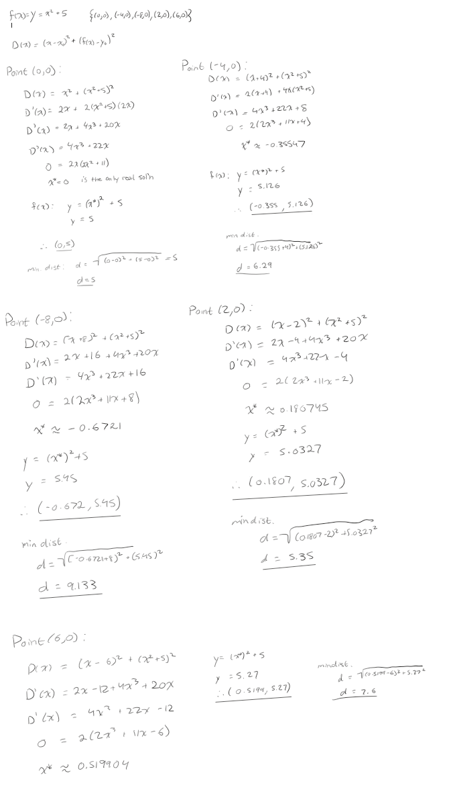
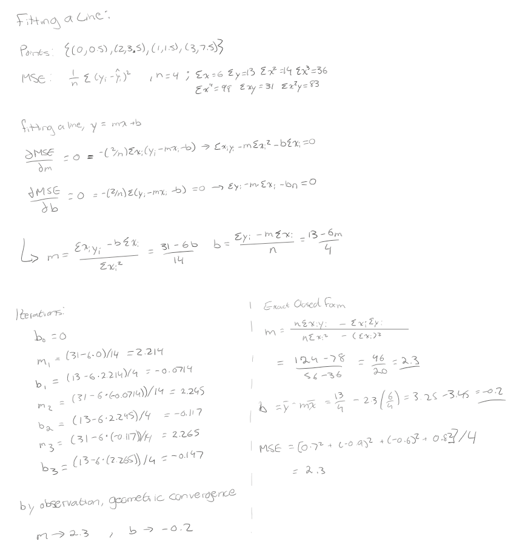
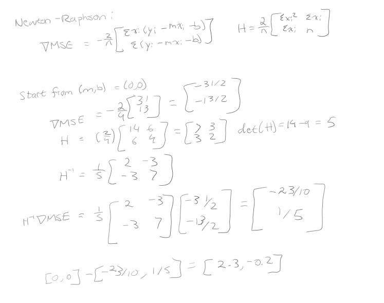
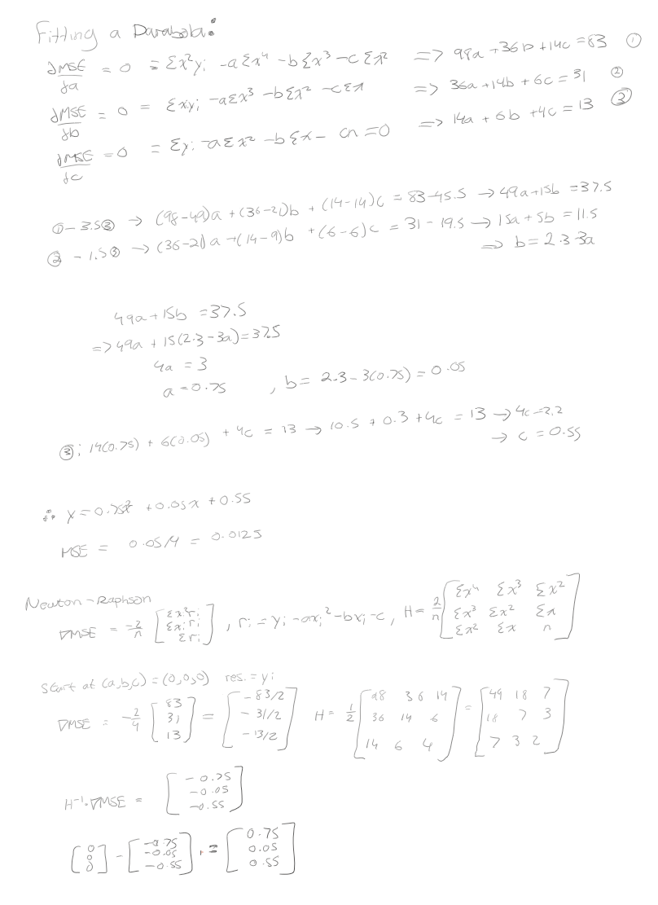